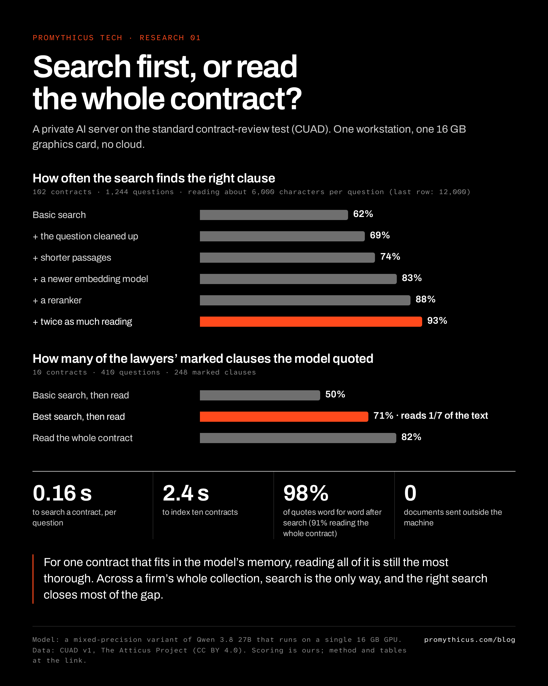

Promythicus Tech · Research 01 · 2026-11-15
On the standard contract-review test (CUAD), a local model reading the whole contract quoted 82% of the clauses that lawyers had marked. Searching first and reading only the best passages quoted 50% with a basic search and 71% with the best search we found, while reading about a seventh of the text. The search itself went from finding the right clause 62% of the time to 88% with three changes: shorter passages, a newer embedding model, and a reranker. Everything ran on one workstation with one 16 GB graphics card and no cloud.

A private document assistant can answer a question about a contract in two ways. It can read the whole contract every time. Or it can search the contract first and read only the few passages that look relevant. The second way is the only one that works across a whole collection, because no model can read five hundred contracts for one question. We wanted to know what the search costs in accuracy, and how good the search can be made.
This part needs no language model. For each of the 1,244 questions that have an answer, across all 102 contracts, we checked whether a passage holding part of the answer was among the ones the search returned. Each search was allowed to return about 6,000 characters.
| Search | Right clause found |
|---|---|
| Basic: an embedding model plus keywords, 1,200-character passages | 62% |
| The same, with the question reduced to the clause name and its description | 69% |
| The same, with 500-character passages | 74% |
| A newer embedding model (Qwen3-Embedding-0.6B), 500-character passages | 83% |
| The same, with a reranker (Qwen3-Reranker-0.6B) re-ordering the first 30 passages | 88% |
Allowed twice as much text, the best search found the right clause 93% of the time.
What did not help: an embedding model seven times larger (the 4B version scored no better than the 0.6B one), adding keyword search to the newer embedding model, putting the contract’s title in front of every passage, and longer passages (2,400 characters dropped to 56%). That shorter passages matter most agrees with what the LegalBench-RAG authors reported. Unlike them, we found that a reranker helps.
We then let the model answer, on ten contracts short enough to be read whole (410 questions, 248 marked clauses), so that every method faced exactly the same questions.
| Way of reading | Marked clauses quoted | Quotes that are word for word | Text read per question |
|---|---|---|---|
| Basic search, then read | 50% | 99% | about 1,300 tokens |
| Best search, then read | 71% | 98% | about 1,200 tokens |
| Best search, twice as many passages | 73% | 95% | about 2,300 tokens |
| Read the whole contract | 82% | 91% | about 8,400 tokens |
On the simpler question, “does this contract have such a clause at all”, the methods were close: the best search said yes on 93% of the questions that had an answer, the whole-contract reading on 89%. The whole-contract reading raised somewhat fewer false alarms (about a third of its yeses had no marked clause, against about four in ten after a search).
So a sensible assistant does both: it searches when the question covers many documents, and reads the whole document when the question is about one that fits.